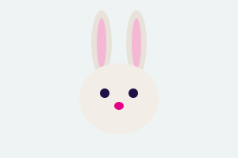

Novo

Rex
Cão, 3 anos. Adora passear e brincar com a bola.
Somos uma associação do Porto que acolhe cães, gatos e coelhos à espera de uma família.
Conhecer os animais
Cão, 3 anos. Adora passear e brincar com a bola.

Gata, 2 anos. Tranquila, gosta de dormir ao sol.

Coelho, 1 ano. Curioso e muito meigo.
| Dia | Horário |
|---|---|
| Segunda a sexta | 14h00 às 18h00 |
| Sábado | 10h00 às 13h00 |
| Domingo | Encerrado |